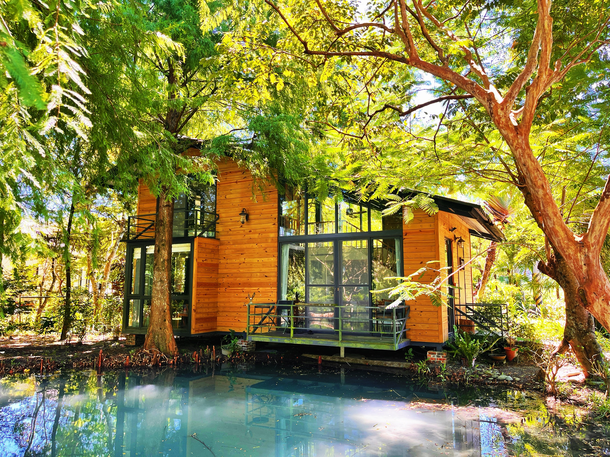
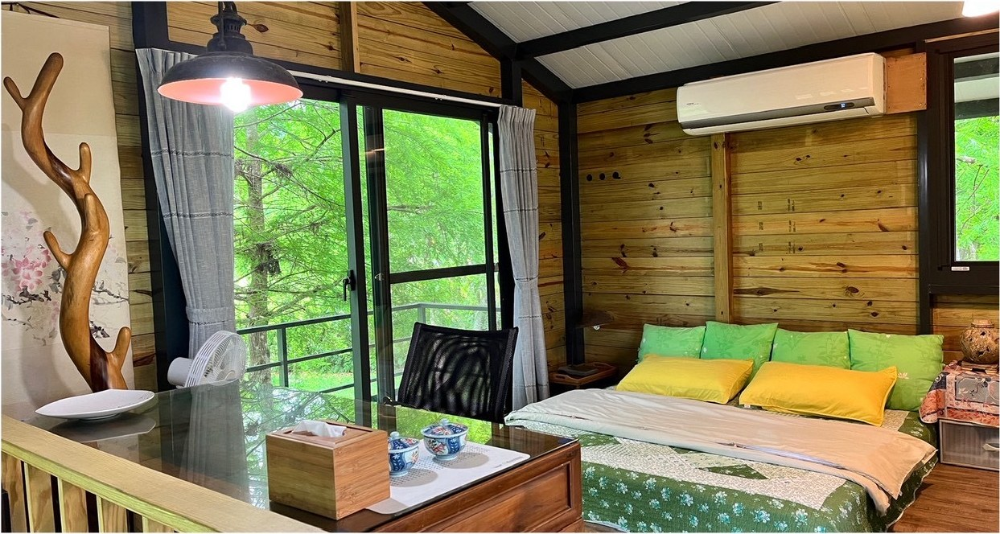
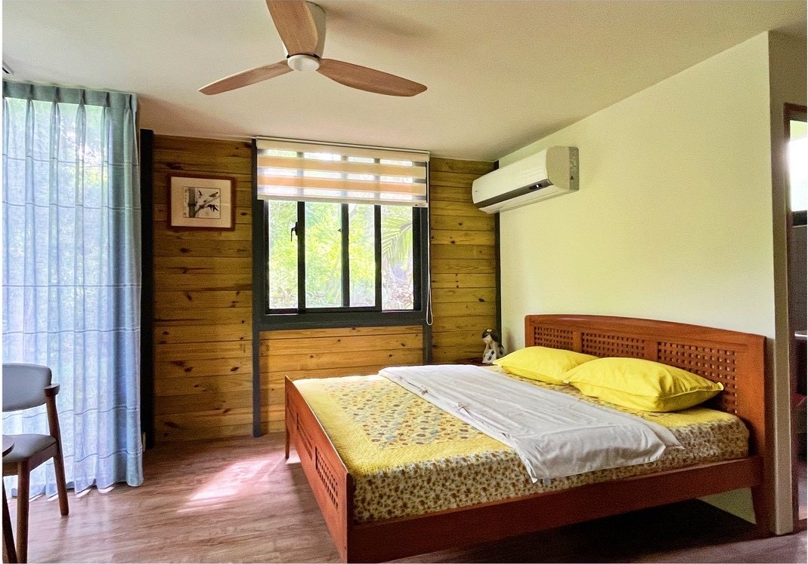
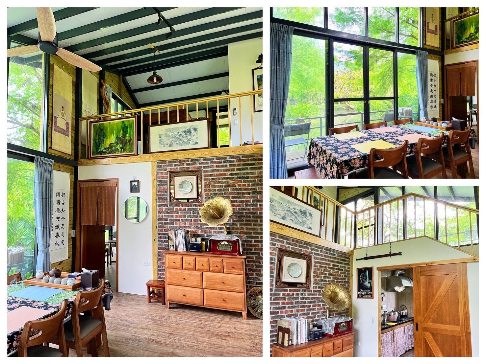
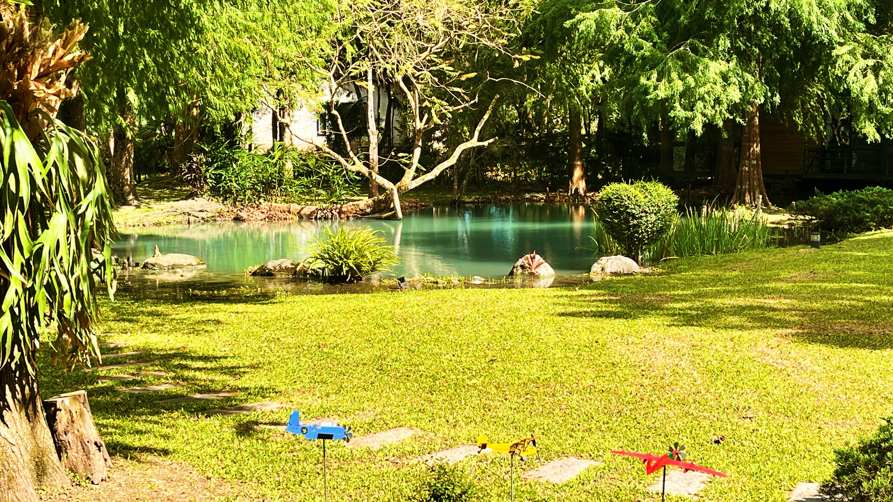

HUALIEN · SHOUFENG · PRIVATE CABIN
在花蓮壽豐，
住進池畔小木屋。
山遇・水見曉逐，一棟有起居室、廚房和兩間雙人套房的小木屋。山在遠處，生態池畔的綠意就在窗前。
獨棟木屋2 間雙人套房含四人次日早餐
獨立於主棟包棟方案，需另行預約。

YOUR CABIN STAY
兩間套房，也有一起待著的空間
兩間雙人套房讓同行的人各有休息空間；起居室與廚房則串起木屋裡的日常。廚房可用設備及使用方式，請於預約時與主人確認。




RATES & BREAKFAST
木屋房價，早餐一起安排
- 平日／每晚
- NT$5,500
- 春節／每晚
- NT$6,500
- 次日早餐
- 提供以四人為基準
- 增加早餐
- 每人 NT$150
- 入住／退房
- 15:00／11:00
早餐加人費用不等於住宿加人或加床費。週末、連假與指定日期房價，請與主人確認。
BEFORE YOUR STAY
木屋入住前，先知道
木屋與主棟包棟是同一個方案嗎？
不是。水見曉逐是獨棟木屋，有兩間雙人套房、起居室與廚房；主棟 11 人包棟不包含木屋，兩者分開預約。
早餐與加人如何計算？
木屋次日早餐提供以四人為基準，每增加一人酌收 NT$150。住宿加人、加床與可入住人數，請在預約前依同行人數向主人確認。
訂金與取消／改期條件在哪裡確認？
請在付款前透過 LINE 與主人確認當次預約的訂金、付款及取消／改期條件，確認後再匯款，並保留雙方確認的內容。
開車停哪裡？可以帶寵物嗎？
可停於民宿庭院空地或門口，請依主人指引停放。寵物同行請於預訂前詢問主人，確認安排後再付款。
木屋位於哪裡？
木屋位於山遇莊園內，地址為花蓮縣壽豐鄉豐山村和平街 8 號，鄰近豐田車站。開啟 Google 地圖導航 →